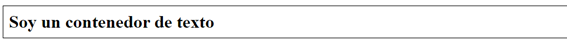

Esta propiedad tiene el mismo comportamiento que margin en cuanto a los valores. Recordemos que
padding es el espacio generado dentro de la caja entre el contenido y el borde, es decir, nos va a
dar el espacio que especifiquemos dentro de la caja.
Ejemplo Padding
A continuación, vamos a modificar la caja que contiene el texto que es la etiqueta h1 y vamos a
agregarle un padding de 10px en todos los lados, recordemos que para hacer una práctica sencilla
de este valor simplemente debemos aplicar uno solo y este reparte ese valor a todas las coordenadas:

Como podemos observar se ha separado el contenido (el texto) de los bordes internos de la caja en
una medida de 10px, también, debemos notar que el contenedor principal no ha cambiado su ubicación
original en relación (izquierda/ superior) ya que no hemos modificado el margin.